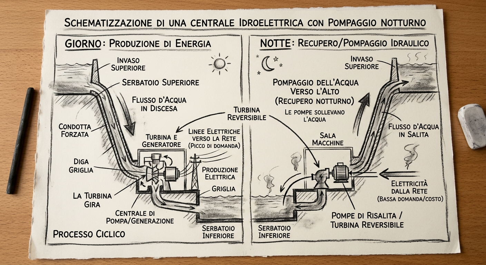

In fisica, l'energia è definita come la capacità di compiere un lavoro. La sua unità di misura nel Sistema Internazionale è il Joule (J).
L'energia idroelettrica è una fonte rinnovabile pulita che sfrutta il movimento e la caduta dell'acqua per produrre corrente elettrica. Nelle centrali moderne, e in particolare in quelle dotate di pompaggio notturno, il sistema funziona come un ciclo continuo ed efficiente.

Schema concettuale del processo ciclico: produzione diurna e recupero notturno.
Colonna Sonora: La Forza dell'Acqua
Ascolta il brano orchestrale ispirato all'imponenza delle cascate e al flusso dell'energia:
Come funziona il Processo Ciclico?
1. Giorno (Produzione di Energia):
L'acqua è raccolta nell'invaso (serbatoio superiore).
Scende lungo la condotta forzata sfruttando la forza di gravità, trasformando l'energia potenziale in energia cinetica.
Arrivata in basso, fa girare la turbina collegata a un generatore, producendo elettricità che viene immessa nella rete per soddisfare i picchi di domanda diurni.
2. Notte (Recupero / Pompaggio Idraulico):
Durante la notte, la richiesta di energia elettrica diminuisce e il suo costo è inferiore.
L'energia in eccesso dalla rete viene utilizzata per azionare le pompe (turbine reversibili) che sollevano l'acqua dal serbatoio inferiore e la ricaricano nel serbatoio superiore.
Questo permette di "conservare" l'energia accumulandola sotto forma di acqua in quota, pronta per essere riutilizzata il giorno successivo.